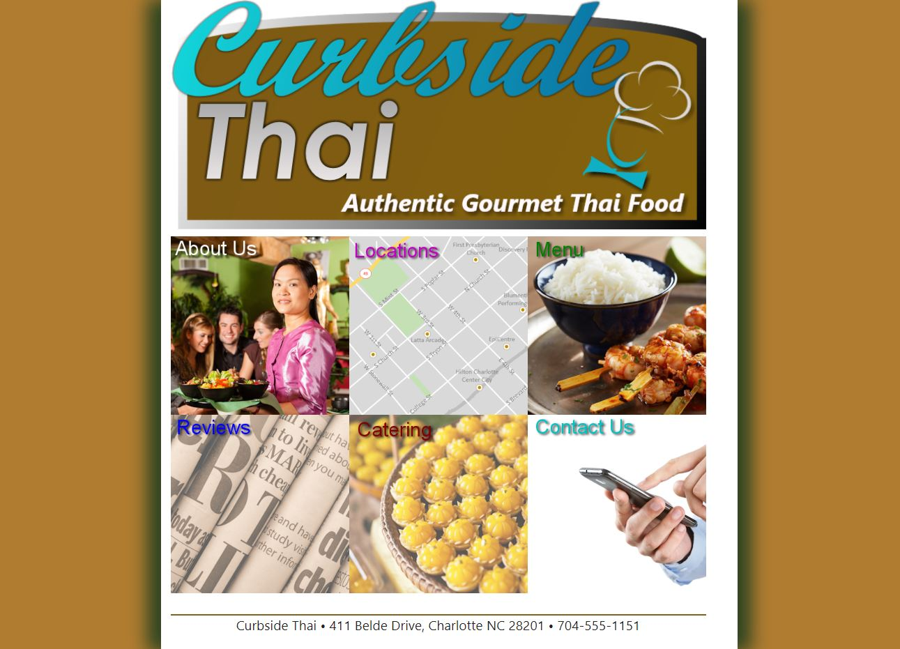
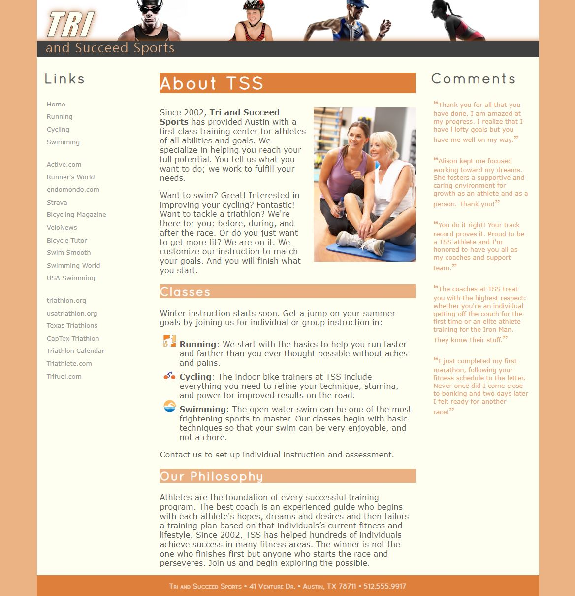
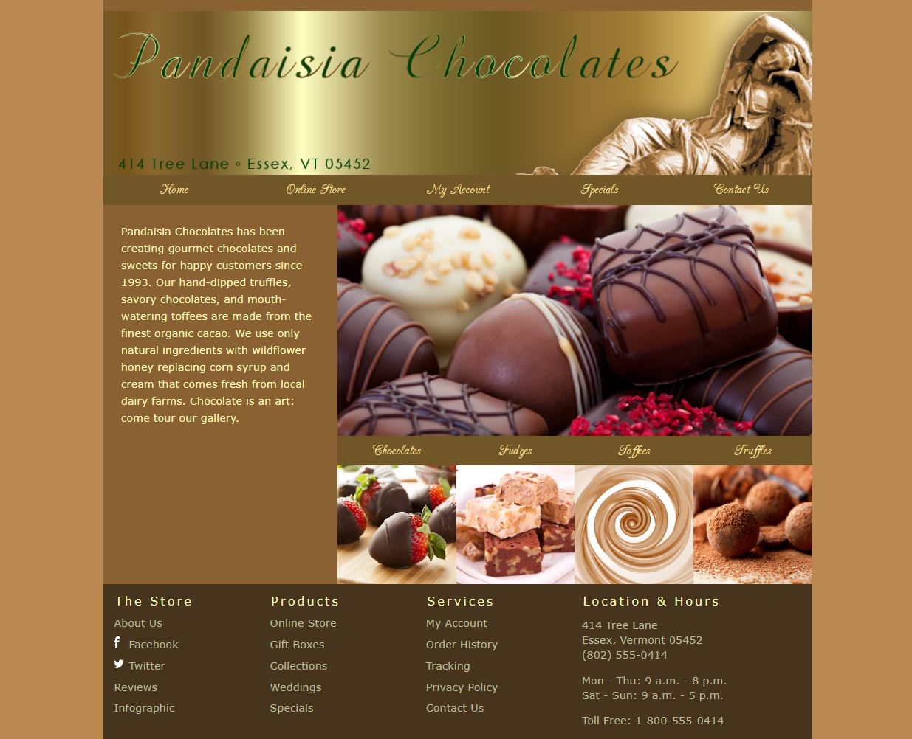

Learning Activities
1-1 Curbside Thai
This assignment was about learning the basics of HTML without having to work on styles as well.
1-3 Try and Succeed Sports
This assignment was about learning basic CSS by adding style to a website already built.
2-1 Pandaisia Chocolates
This assignment was to learn how to build a layout to pages and the few different ways you can do it.